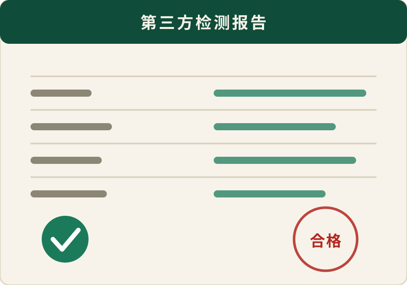

一饼一码溯源
每款山头茶贴唯一追溯码，扫码可看茶园实拍、采摘批次、压制日期与检测报告，年份与产区不玩虚的。
怕买到香精茶、怕被产地故事忽悠、怕泡起来太麻烦。拾野茶集把这三件事做成产品标准与售后服务，写进每一张订单。
每款山头茶贴唯一追溯码，扫码可看茶园实拍、采摘批次、压制日期与检测报告，年份与产区不玩虚的。
与 12 座茶山签年度订单，鲜叶到成品只经一次精制，省掉中间商环节，同品质山头茶价格低 20%-35%。
不想洗茶具也能喝原叶：冻干茶粉冷热双泡、三角茶包直接丢进杯子，办公室、出差、健身都能喝。
收到后 7 天内不满意，未拆封整箱退；已开罐也可凭口味评价换同价产品一次，运费我们承担。
数据来自拾野茶集自营店铺后台（虚拟教学数据）。第一次买茶的人，多数从这三款开始。


原叶低温萃取后冻干，冷水一冲即溶，0 糖 0 添加，夏天续命水就是它。

冰糖甜与山野气并存，压饼后仍有回甘，适合长期存放与送长辈、送客户。
山头原叶、便捷冲泡、会员礼盒三条产品线，覆盖自己喝与送人两种场景。
活动时间 2026 年 9 月 23 日至 10 月 31 日，所有规则可叠加前先看清楚，避免下单后才发现不适用。
首次在拾野茶集下单的新用户，凭券码 SHIYE20 立减 20 元，可与店铺满减叠加。
距活动结束
季卡原价 459 元，开业季 399 元，含 4 期时令茶盒、每期 1 款正装与专属茶顾问。
距活动结束
我们整理了近 400 份新客咨询记录（虚拟教学数据），把最常见的四个问题与对应方案列在下面。
| 你遇到的问题 | 为什么会这样 | 拾野茶集的做法 |
|---|---|---|
| 怕买到香精茶、拼配茶 | 只看包装与名字，看不到原料批次 | 一饼一码溯源，扫码可见采摘批次与农残检测报告 |
| 不懂产区，怕被故事忽悠 | 山头名称混乱，价格差距大却说不清差别 | 每款产品标注山头、海拔、树龄区间与口感描述，客服先问口味再推荐 |
| 担心买回去不会泡 | 水温、投茶量、坐杯时间没人教 | 随箱附冲泡卡，客服按你的杯子与口味给参数，可拍视频教学 |
| 送礼怕没面子 | 普通礼盒缺故事，客户收到也记不住 | 提供定制茶礼：可印企业 LOGO、附溯源卡与手写贺卡，50 份起订 |
拾野茶集与茶山签订年度直采协议，鲜叶进场后按批次送第三方检测，农残、重金属、水分与灰分逐项留档。检测报告随货附二维码，也可以在官网客服处索取对应批次的完整版本。

以下问题来自客服后台的高频咨询，若还有疑问，直接联系在线客服，30 分钟内答复。
每款山头茶的外包装贴有一枚唯一追溯码。扫码后可以看到：茶园所在乡镇与海拔区间、鲜叶采摘日期、制茶师傅与初制工艺、压制或分装日期、该批次第三方检测报告，以及茶园当季实拍照片。如果同一款茶换了批次，追溯码也会随之更换，旧码仍可查询历史信息。
大多数新客从 158 元的凤庆滇红金针开始：蜜香明显、口感甜顺，用 85℃ 水温冲泡不容易苦涩，保温杯闷泡也能接受。如果平时主要在办公室喝冷水或气泡水，建议试试 129 元的 3 秒冷萃冻干茶粉；如果买来送长辈或客户，可以直接看 698 元的冰岛五寨古树生普饼茶。不确定的话，把口味与预算告诉客服，我们会给 2-3 个选项。
区别在原料与工艺。拾野的冻干茶粉以云南原叶茶为原料，先低温萃取茶汤，再在零下 40℃ 真空冻干成粉，只保留茶本身的成分，不添加香精、白砂糖与植脂末。速溶茶粉多为高温喷雾干燥，常加入糖与香精改善口感。冲泡时可以冷热双泡，3 秒即溶，也能加牛奶做成茶拿铁。
工作日 15:00 前付款的订单当天出库，其余订单次日发出，出库后 48 小时内可查物流。默认发顺丰，云南、贵州、四川通常 1-2 天到达，华东华南 2-3 天，西北与东北 3-4 天。港澳台及部分偏远乡镇会提前联系确认运费与时效。所有订单支持在发货前改地址或取消。
可以。未拆封的商品 7 天内可整单退换；已经拆封品尝但不喜欢口感的，可凭口味反馈申请一次同价产品换货，往返运费由我们承担。若是产品出现受潮、异味、包装破损等质量问题，无条件退款或补发，并同步反馈给茶山改进工艺。
常规礼盒 50 份起订，199 元/份起，可定制外盒 LOGO、腰封文案、溯源卡与贺卡。确认设计稿后 7-10 天完成生产，节假日旺季建议提前 20 天沟通。50 份以下的小批量订单可以走零售礼盒加定制腰封的方案，单价会略高一些，具体可联系市场推广专员核算。
可以暂停。会员共 4 期配送，未发出的期数支持暂停一次（最长 3 个月）或直接退订未发部分，按剩余期数原价退款；已发出并签收的期数不参与退款。我们不做自动续费，季卡到期前 7 天会通过短信或微信提醒，是否续费由你决定。
云南是我国古茶树资源最集中的省份，临沧、普洱、西双版纳与保山四大茶区各有风格：临沧茶多冰糖甜、回甘快，适合刚接触生普的人；勐库大雪山一带的茶树芽叶肥壮，制成晒红甜感突出；凤庆是滇红的传统主产区，金针类产品毫香明显；普洱区域的古树茶汤感厚实，适合存放转化。选山头茶时，先确认产区与年份，再确认工艺，最后才是价格。
工艺决定口感的上限。以晒青与烘青为例，晒青工艺保留了更多活性物质，后期转化空间大，适合做生普；烘青香气高扬但存放后香气衰减较快，更适合当年喝完。红茶则看发酵与干燥方式，日光晒制的晒红甜润度高、耐泡；传统烘焙的滇红蜜香更明显。拾野茶集在产品页里标注了每款茶的工艺与建议饮用期，方便你按自己的喝茶节奏挑选。
价格与品质没有绝对对应关系，但成本结构骗不了人。以一饼 357g 的山头茶为例，鲜叶、初制、精制、压制、仓储与包装构成主要成本，价格过低通常意味着原料等级或产区存在差距。拾野茶集与 12 座茶山签订年度直采协议，把中间环节压到最少，因此能在 79-698 元区间提供可溯源的产品：日常口粮用 79-268 元的产品线，送礼与存茶再考虑 698 元以上的饼茶。
还不确定选哪一款？可以查看全部 8 款产品的价格与卖点，或者直接提交选茶需求，茶顾问会按你的口味与预算给出建议，并附冲泡参数。